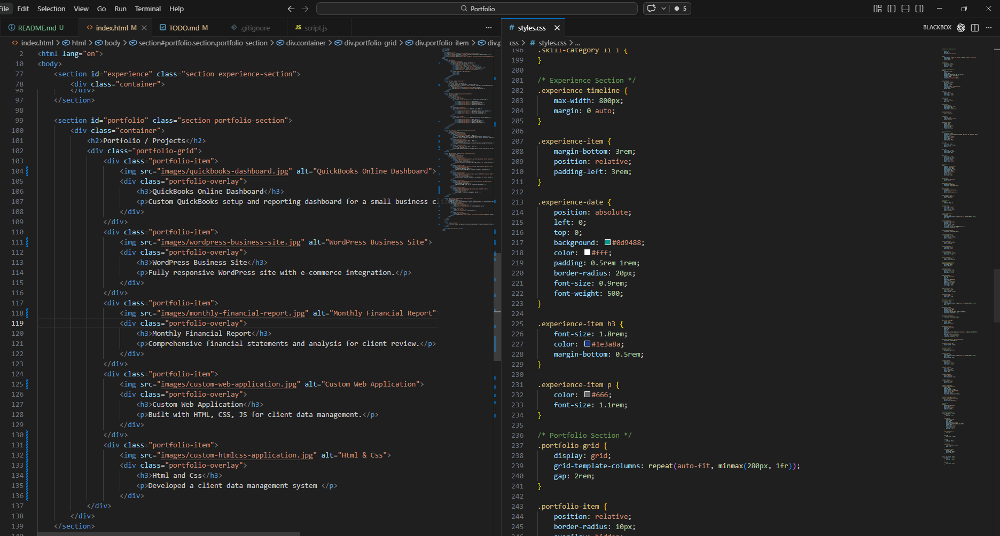

Professional Experience
2022 - 2024
-.-.--Subject Matter Expert - QuickBooks Online & Payroll
Provided expert guidance on QuickBooks setup, payroll processing, and troubleshooting for clients. Delivered training sessions and customized financial workflows.
2024 - 2026
--..--Bookkeeper
Managed full-cycle bookkeeping, reconciled accounts, prepared financial statements, and ensured compliance for multiple small business clients.
2024 - 2026
--..--Web Developer
Developed responsive websites using WordPress, custom HTML/CSS/JS, and integrated payment systems for client projects.
Projects



Let's Connect
Ready to discuss your bookkeeping, payroll, web development, or support needs? Get in touch today!